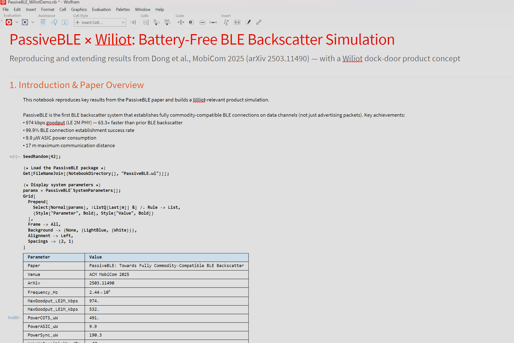
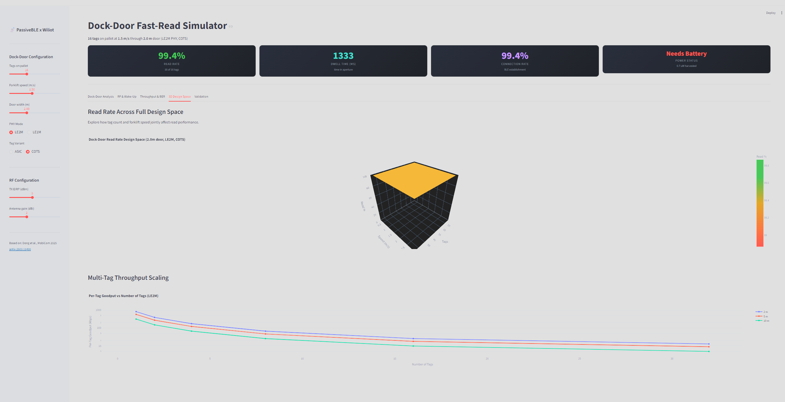
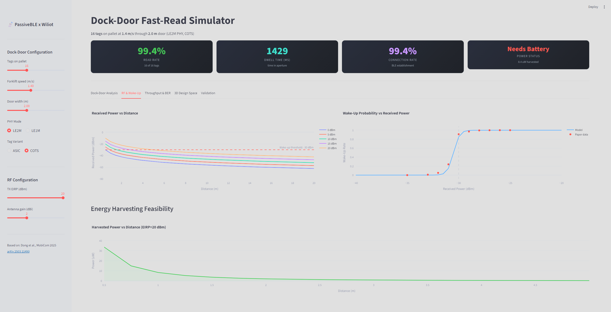

From Research Paper
to Product Simulation
PassiveBLE x Wiliot: The Complete Journey
One AI workflow · One paper · Two simulations · Fully executable
The Mission
Show Wiliot how Amp transforms cutting-edge research into actionable product simulations — in a single automated workflow.
Target
Demonstrate the paper-to-simulation-to-product pipeline on a topic directly relevant to Wiliot's battery-free IoT business.
Why Wiliot?
Wiliot builds battery-free Bluetooth "IoT Pixels" for supply-chain visibility. PassiveBLE — a BLE backscatter breakthrough — is a perfect fit.
"Can a single AI session turn a MobiCom paper into an interactive product prototype?"
The Amp Workflow: 6 Steps
Curate 5 high-relevance papers from 2024-2026
Extract methodology, innovations, key results
3-5 product concepts ranked by feasibility
Model components, data approach, validation
Executable Wolfram Mathematica + Python code
Compare results against paper claims — pass/fail
Step 1: Research Slate
arXiv 2503.11490 · MobiCom 2025 · 974 kbps · 9.9 µW
ACM 2025 · Privacy-aware telemetry
arXiv 2603.04626 · Light-assisted smart shelves
IEEE · Outdoor parcel transit visibility
MIT 2025 · Metal-safe deployment advisor
Step 2: The Paper
PassiveBLE: Fully Commodity-Compatible BLE Backscatter
Dong et al. · ACM MobiCom 2025 · arXiv 2503.11490
What They Did
First BLE backscatter system that establishes real BLE connections on data channels — not just advertising packets. Works with unmodified smartphones.
Key Innovation
Distributed coding scheme offloads channel encoding to the excitation source via XOR operations on RF signals — tags stay ultra-low-power.
Three Technical Breakthroughs
Synchronization
Coherent-detection circuit wakes tags with 93 ns accuracy and -30 dBm sensitivity.
Distributed Coding
XOR on RF signals: excitation source handles dynamic parameters, tags just scatter. 9.9 µW.
Connection Scheduler
Real BLE connections — establishment, maintenance, frequency hopping — for multiple tags.
Paper Results: By the Numbers
| Metric | PassiveBLE | Prior Best | Gain |
|---|---|---|---|
| Max Goodput (LE 2M) | 974 kbps | 15.4 kbps | 63.3x |
| Max Goodput (LE 1M) | 532 kbps | 15.4 kbps | 34.5x |
| Connection Type | Data Channel | Advertising | First ever |
| Connection Success | >99.9% | N/A | — |
| Power (ASIC) | 9.9 µW | 15.4 µW | 1.6x |
| Max Distance | 17 m | — | — |
| Sync Accuracy | 93 ns | — | — |
Step 3: Commercial Ideas
Dock-Door Fast Read
Scan every item on a pallet as it passes through — no stopping. 974 kbps enables real-time verification.
Top Pick
Authenticated IoT
BLE data connections provide encryption that advertising cannot — critical for pharma and high-value goods.
In-Vehicle Sensors
Battery-free sensor networks inside vehicles at 532+ kbps — automotive and fleet management.
Smart Shelf Inventory
Continuous shelf-level visibility using passive BLE tags that connect to any smartphone.
Step 4: Hero Demo
- Direct Wiliot relevance — supply-chain core
- Quantifiable: read rate, throughput, tags/second
- Interactive parameters: speed, tags, door width
- Multi-physics: RF + scheduling + energy
The Scenario
32 tagged items through a 2 m dock door at 1 m/s
Can we read every tag?
Notebook Overview & Parameters


RF Link Budget

Wake-Up Performance

Throughput Analysis

BER & Connection Performance
Multi-Tag Scheduling & Interactive Dashboard

Streamlit Dashboard Overview


RF, Throughput & BER


Validation & Comparison
Mathematica vs Python: Head to Head
| Aspect | Mathematica | Python + Streamlit |
|---|---|---|
| Interactivity | Manipulate: instant kernel-side sliders | Browser-based; Plotly hover/zoom/rotate |
| 3D Visualization | Static ViewPoint rotation in notebook | Plotly: fully rotatable/zoomable in browser |
| Symbolic Math | Native CAS — derive formulas symbolically | Numerical only (SymPy for symbolic) |
| Plot Quality | Publication-ready vector; fine Epilog control | Dark-themed interactive; raster from matplotlib |
| Hover/Tooltips | None — static output | Exact values on hover at any point |
| Code Reuse | .wl BeginPackage/EndPackage | Standard module; dataclasses; type hints |
| Extensibility | Paclets, Wolfram Cloud | pip: pandas, scikit-learn, TF, API |
| Reproducibility | SeedRandom[42]; cell order can be ambiguous | Deterministic script; CI/CD; git-friendly |
| Sharing | PDF/CDF or Wolfram Cloud | URL, Streamlit Cloud, Docker |
| Validation | proof_audit.wls (WolframScript) | Inline assertions + pytest compatible |
When to Use Which
Mathematica
- R&D exploration — modify equations on the fly
- Symbolic derivation — CAS for closed-form solutions
- Live demos — Manipulate for instant parameter sweeps
- Publication figures — vector, camera-ready
- Rapid prototyping — fewer lines for complex math
Python + Streamlit
- Sharing with engineers — browser, no license
- CI/CD integration — pytest, GitHub Actions
- Web dashboards — Plotly interactivity, tooltips
- ML/data pipelines — pandas, scikit-learn, TF
- 3D exploration — rotatable, zoomable surfaces
One Paper.
Two Simulations.
One Product Concept.
Amp turned a MobiCom 2025 paper into validated, interactive product simulations in both Mathematica and Python — with reusable code, automated verification, and a clear path to Wiliot's next product.
PassiveBLE x Wiliot Demo · Built with Amp · April 2026